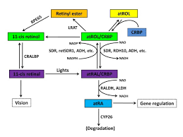

How Vitamin A Produce
Vitamin A is a fat soluble vitamin or oil and has several functions in the human body. There are a number of organic bonds that have vitamin A activity, which all contain beta-ions in their molecular structure.
The chemical bond that has this vitamin activity is called preformed vitamin A, as opposed to it is provitamin A, which consists of carotene bonding. A homologous sequence of preformed vitamin A is vitamin A alcohol, vitamin A aldehyde, and vitamin A acid. Preformed vitamin A is now labeled retinol, and its retinal homologs and retinoic acid.
There are two types of this vitamin, vitamin A1 and vitamin A2. The difference between the two structures is that there are two unsaturated bonds in the beta rings of ions in vitamin A2, whereas vitamin A1 contains only one twin bond on the ring. When mentioning vitamin A alone, usually the meaning is vitamin A alcohol.
Preformed vitamin A is specialized in animal foods, while plant-based foods contain only provitamin A called carotene. A preformed vitamin A source is liver, kidney, and fish oil.
Preformed vitamin A in animal feedstocks is present in the form of fatty esters, especially stearic acid, palmitic acid, and oleic acid. Inside the food, there is no natural vitamin A (retinoic acid) acid. In the gastrointestinal tract, vitamin A ester is hydrolyzed and retinol is liberated absorbed by the active absorption process through the epithelial wall of the small intestinal tract.
Provitamin A is absorbed while converted to vitamin A (retinol) in the small intestine epitelsel. To hydrolyze vitamin A esters, hydrolase enzymes are needed, and to convert carotene into vitamin A requires 5.5 dioxihidrolase enzymes. This enzyme is found mainly in the mucosa of intestinal epithelial cells and liver cells (read about enzymes).
To absorption of carotene bile is required, whereas bile is not essential for the absorption of preformed vitamin A, but the presence of bile increases the absorption of preformed vitamin A. After absorption of vitamin A is reestablished and transported by kilomicron through the thoracicus ducts, enter the bloodstream in the venosus angulus.
Vitamin A is then captured by the liver parenchymal cells. Some of the vitamin A is stored in liver cells, and some are hydrolyzed into retinol and conjugated with pRBP (Plasma Retinol Binding Protein) and are removed from liver cells into the bloodstream. In the plasma is bound by prealbumin and part of the vitamin A retinol-pRBPPA complex is transported from the heap to the target cells that require vitamin A throughout the body tissues.

For the purpose of absorption of carotene and vitamin A through the digestive tract needed fat or oil. Once absorbed, carotene and vitamin A are channeled to the liver tissue to be stored as a reserve. When the liver reserve is low and input through food is not sufficient for everyday needs there will be a danger of symptoms of deficiency. From the liver tissue, vitamin A is channeled into the blood that further carries to the body organs that require it. For this transport a binding protein called retinol-binding protein is required.
Vitamin A is excreted in the form of a metabolite, the result of the breakdown in the cell. Some of the vitamin A is oxidized to CO2 and H2O which is excreted in the air respiration. Urine also contains some metabolites derived from the catabolism of vitamin A, some of vitamin A has enterohepatis cycle that is excreted in bile but reabsorbed through the small intestine.
Vitamin A in the human body comes from animal and vegetable foods. In foodstuffs, vitamin A is generally ester-shaped palmitate. Under normal circumstances, 80-90% of vitamin A and 40-60% of food beta carotene is absorbed from the intestine. In the intestine vitamin A and carotene are processed just like lipids.
There are some special things: First, retinol is absorbed more efficiently than with carotene. Second, retinol absorption remains high under increasing conditions. Third, retinol is well absorbed in the form of myceliasis. Fourth, retinol is transported through cell walls with active processes at low consumption levels, but by diffusion processes at high consumption levels. Medium carotene is processed by diffusion at all levels of consumption.
Once absorbed, vitamin A is transported in kilomikron into the lymph circulation to the liver. In the liver, vitamin A ester is hydrolyzed into retinol and re-immersed into palmitate, then stored in liver fat, while a small proportion undergo further metabolism.
Two types of cells that play an important role in the storage of vitamin A in the liver are hepatocytes and lymphocytes. In normal circumstances lymphocytes can store 80% of vitamin A liver. Once out of the liver, vitamin A retinol in the circulation is bound by Holo-RBP. In target cells united with Celluler-RBP. Each CRBP molecule binds an all-trans retinol molecule.
CRBP compounds are present in tissues such as the brain, mucosa, intestines, eyes, kidneys, testes, liver, and lungs. CRBP also contains CRABP (Cellular Retinoic Acid Binding Protein), which binds to all trans retinoic acid, and is absent in the kidneys, liver, and lungs. There is anottein) especially retinal binding as well as 11-cis retinol. The CRALBP compound is present in the eye tissue.